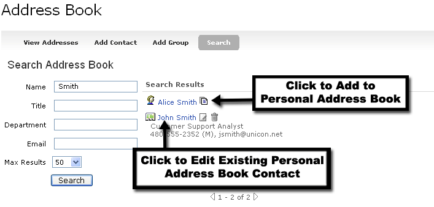
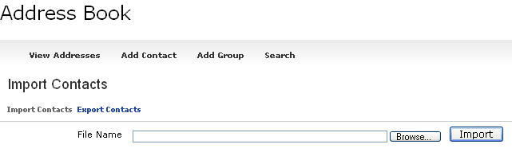
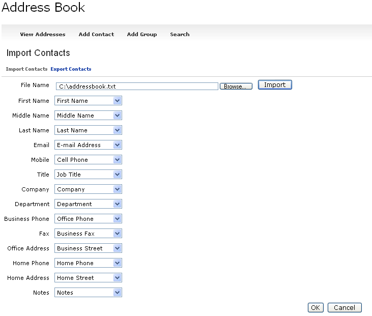

Address Book Channel
Looking for more help options? Click Here
The Address Book channel allows a user to maintain a personal list of contacts and groups that can be used in concert with the Personal Calendar Channel as well as the WebMail Channel.
Searching and Importing Contacts
The default address book view gives you 3 choices:
- View and Manage Contacts
- Add Contact
- Add Groups
Within the View and Manage Contacts view users have access to add group and contact features, as well as the ability to import contacts, export contacts, and search for contacts.

To add a new contact to the Address book, click the Add Contact option. The following fields are requested with only the Name field being required:
- Name
- Mobile
- Title
- Company
- Department
- Business Phone
- Fax
- Office Address
- Home Phone
- Home Address
- Notes
- Group Information
All of the fields above can also be edited by selecting the appropriate row from the View Addresses or Search views.

|
|
In order to add an individual to a group, a group must have been previously added into the system. To add a new group, click the Add Group option. |
|
|
It is possible to delete groups within the Address Book. By deleting a group, however, you will not delete the associated address book entries. These entries will simply move over to the "All" group. |
The search functionality is very similar to that provided within both the Briefcase and Calendar channels. Based on the search criteria, a list of users will be returned. You can choose to add an entry to your address book from the list of portal entries returned, edit an existing entry or delete an existing entry from this view.

Importing and ExportingThe Address Book channel supports the import and export of address book entries. The import and export files are text files that require a tab-delimited format, and include the following column headers:
- First Name
- Middle Name
- Last Name
- E-mail Address
- Mobile Phone
- Job Title
- Company
- Department
- Business Phone
- Business Fax
- Business Street
- Home Phone
- Home Street
- Notes
To Import Contacts:
- Click the View Addresses option.
- Click the Import Contacts link.
- Click Browse to locate the import file on your computer.
- Click Import.

When importing, the system will prompt you to map the fields contained in your input file to the fields supported in the Academus Address Book. For example, if your input file stores the contact's "Mobile" phone number in a field called "Cell Phone"; select "Cell Phone" from the drop down box next to Mobile Phone to map these fields in the import process.
Click OK when mappings have been verified to initiate the import process.
